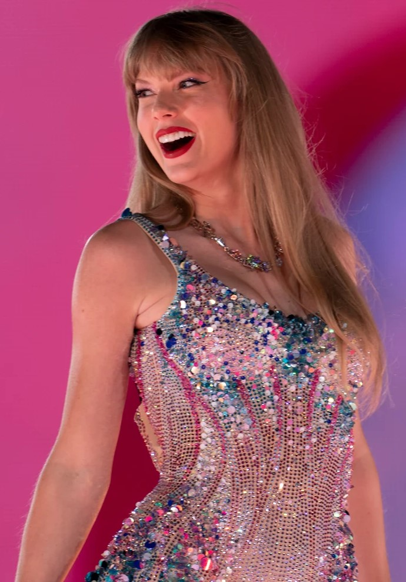
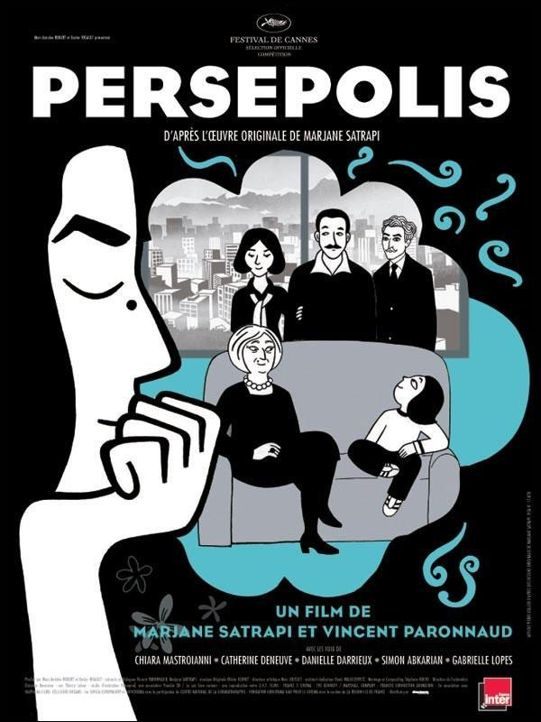
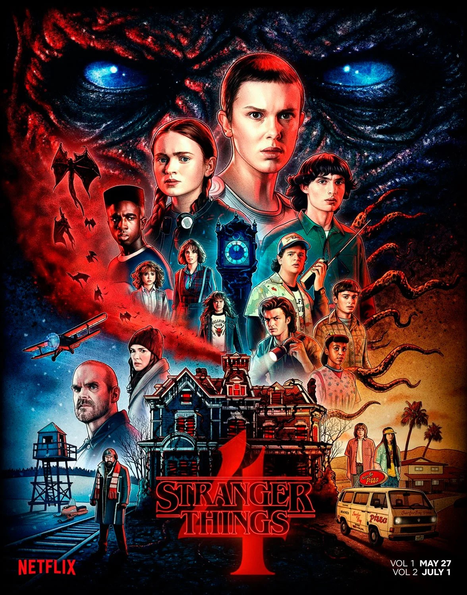
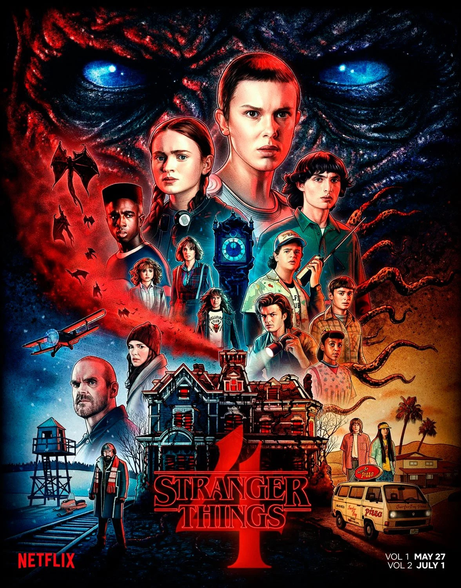

Mis Hobbies
No tengo tantas hobbies como me gustaría pero igual disfruto bastante de realizar alguna que otra actividad. Siempre he sido una persona muy hogareña y que no realiza mucha actividad física, prefiero las áreas donde solo vas a un lugar y consumes lo que gustas sin tanto movimiento. Por eso mis actividades favoritas son:
Música
Amo escuchar a mis cantantes favoritas, sobre todo cuando estoy en momentos de estrés y simplemente quiero dejarme llevar y necesito tranquilizarme, no escucho todo tipo de música, mis géneros predilectos son el pop y el rock, pero más el pop. Mi cantante favorita es Taylor Swift, su música siempre me ha gustado, desde pequeña la oía con mis amigas, sin embargo conforme pasaron los años mi interés ha aumentado, volviéndose ahora mis reproducciones constantes en mi app de música; es de las artistas que siento que más me comprenden emocionalmente al escuchar sus canciones siento como un abrazo a esa persona que arruinó muchas cosas en el pasado. Recientemente fui a su concierto. Sin embargo, también soy gran fan de los musicales de broadway, uno de mis sueños más grandes es poder ir a uno en Nueva York, sobretodo de los que son mis favoritos. Entre los que más me gustan están las historias sobre adolescentes y temas de amorío, como Dear Evan Heansen y Heathers.
Dibujo
El gusto por dibujar es algo reciente antes de entrar a la carrera de Diseño, de niña no lo hacía tanto pero hoy en día es mi trabajo y una actividad recurrente en mi universidad, es imprescindible soltar la mano en los primeros años, pero logré agarrarle un gusto muy bonito al ver mis ilustraciones terminadas.
Mi técnica predilecta es la ilustración digital, es la que más utilizado a la hora de ilustrar porque me siento más cómoda y es la que más he utilizado a lo largo de mi carrera. Uso un programa llamado Clip Studio Paint, ahí es donde más práctica he agarrado, tanto en cómo es la técnica, los pinceles, el hacer uso correcto del color, y cómo estructurar bien una ilustración a lo largo del lienzo. Algo que sí puedo decir que no me gusta nada de esto es que cuando tu equipo no está bien calibrado a la hora de imprimir los resultados pueden ser algo desastrosos si no se imprimen las imágenes en el lugar correcto, pero igual es algo que uno va aprendiendo conforme pasa el tiempo.
También me encargo de convertir mis ilustraciones en mercancía para vender en bazares, realizo prints, stickers, litrografías y dempas productos que hagan visibles mis ilustraciones.
Cine
Me ha encantado ir al cine desde que tengo memoria, hoy en día siempre intento ir a ver las películas que me interesan, llegar a la sala y vivir la película es toda una experiencia para mi, me fascina todo, también consumir contenido en la tele de mi casa o en mi teléfono es algo que hago mucho, soy fan de muchas franquicias de películas y series, mi película favorita siendo imposible de decidir porque siempre me gusta algo diferente, pero creo que el género de Animación sería mi favorito. De igual forma me gusta ver series, sobretodo de comedia y policías, aunque la ciencia ficción igual me llama la atención; también aquí aplican las historias animadas, yo diría que mis favoritas son Brooklyn 99 y Stranger Things. 
